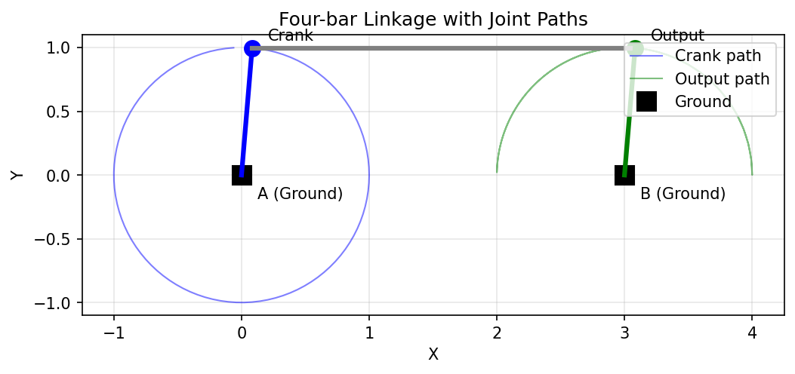
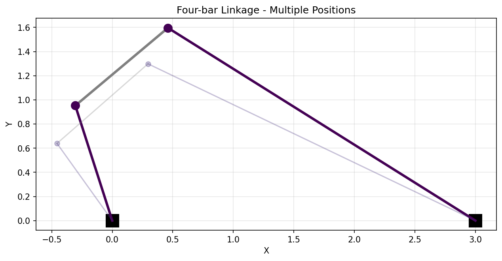

Getting Started
This tutorial introduces the core concepts of pylinkage and walks you through building and simulating your first linkage mechanism.
Installation
Install pylinkage using pip:
pip install pylinkage
Or with uv:
uv add pylinkage
Core Concepts
Pylinkage models planar linkage mechanisms with three kinds of objects from
the components / actuators / dyads packages, plus a thin
container. This is the recommended way to define a mechanism; the other
representations (mechanism, hypergraph, assur) are covered in
later tutorials and convert to and from this one.
Components: building blocks of the mechanism (
Groundanchors,Crank/LinearActuatordrivers, and dyads such asRRRDyad,FixedDyad,RRPDyad).Linkage: a
pylinkage.simulation.Linkagethat orders those components and advances them through a motion cycle.Simulation: either the
linkage.step()generator or the numba-acceleratedlinkage.step_fast()/step_fast_with_kinematics().
Component Types
Pylinkage provides several component types:
Ground (from
pylinkage.components): a fixed point in space (used as an anchor on the frame).Crank (from
pylinkage.actuators): a rotating motor that drives the mechanism, given a ground anchor, a radius and an angular velocity.RRRDyad (from
pylinkage.dyads): a pin joint constrained to a pair of anchors via circle-circle intersection (two distances).FixedDyad (from
pylinkage.dyads): a point that sits at a fixed distance and angle from two anchors (rigidly attached to a link).RRPDyad (from
pylinkage.dyads): a slider — a pin joint whose position is constrained by a line through two anchors.
Your First Linkage: Four-Bar Mechanism
A four-bar linkage is the simplest closed-loop mechanism. Let’s build one step by step.
Step 1: Import the building blocks
from pylinkage.actuators import Crank
from pylinkage.components import Ground
from pylinkage.dyads import RRRDyad
from pylinkage.simulation import Linkage
Step 2: Define the components
We need two ground anchors, a crank (motor), and an RRR dyad that closes the loop:
from pylinkage.actuators import Crank
from pylinkage.components import Ground
from pylinkage.dyads import RRRDyad
from pylinkage.simulation import Linkage
# Ground anchors — two fixed points on the frame.
A = Ground(0.0, 0.0, name="A")
D = Ground(3.0, 0.0, name="D")
# Crank — rotates about A with radius 1, one step = 0.31 rad.
crank = Crank(
anchor=A,
radius=1.0,
angular_velocity=0.31,
name="Crank",
)
# Coupler-rocker pin joint — closes the loop between the crank tip
# and the ground anchor D.
pin = RRRDyad(
anchor1=crank.output, # tip of the crank
anchor2=D,
distance1=3.0, # coupler length (B → C)
distance2=1.0, # rocker length (C → D)
name="Output",
)
Step 3: Create the linkage
Wrap the components in a Linkage:
linkage = Linkage(
[A, D, crank, pin],
name="Four-bar linkage",
)
Step 4: Simulate the motion
Run the generator through one full revolution:
# ``linkage.step()`` yields the positions of every component at each step.
loci = tuple(linkage.step())
# loci[i] is a tuple of (x, y) coordinates in the component order.
print(f"Simulation steps: {len(loci)}")
print(f"Final crank tip: {loci[-1][2]}")
print(f"Final output point: {loci[-1][3]}")
For a numba-accelerated simulation that returns a contiguous numpy array,
call linkage.step_fast() instead — same result, one to two orders of
magnitude faster for large iteration counts.
Step 5: Visualize the linkage
Use the built-in visualizer to watch the mechanism move:
import pylinkage as pl
pl.show_linkage(linkage)
This opens a matplotlib window with the linkage animating through its motion cycle.
{kind=link}

A four-bar linkage showing the paths traced by each joint during simulation.
To see multiple positions of the linkage overlaid, you can run the simulation and plot at different crank angles:
{kind=link}

The same four-bar shown at 8 different positions throughout its motion cycle.
Complete Example
Here’s the complete code:
import pylinkage as pl
from pylinkage.actuators import Crank
from pylinkage.components import Ground
from pylinkage.dyads import RRRDyad
from pylinkage.simulation import Linkage
# Components
A = Ground(0.0, 0.0, name="A")
D = Ground(3.0, 0.0, name="D")
crank = Crank(anchor=A, radius=1.0, angular_velocity=0.31, name="Crank")
pin = RRRDyad(
anchor1=crank.output,
anchor2=D,
distance1=3.0,
distance2=1.0,
name="Output",
)
# Linkage
linkage = Linkage([A, D, crank, pin], name="Four-bar linkage")
# Visualize
pl.show_linkage(linkage)
Understanding the Constraint System
Each component has one or more geometric constraints (a crank radius, two distances on an RRR dyad, a distance and an angle on a fixed dyad, …). The linkage exposes them as a flat list so optimization code can treat every constraint uniformly:
# Get all constraints as a flat list.
constraints = linkage.get_constraints()
print(f"Constraints: {constraints}")
# → [1.0, 3.0, 1.0] (crank radius, d1, d2 on the RRR dyad)
# Modify and apply.
constraints[0] = 1.5 # Bigger crank radius
linkage.set_constraints(constraints)
# Joint positions
coords = linkage.get_coords()
print(f"Component positions: {coords}")
Handling Errors
Some configurations are geometrically impossible. Pylinkage raises
UnbuildableError when a linkage cannot be
assembled:
try:
tuple(linkage.step())
except pl.UnbuildableError:
print("Linkage cannot be built with these constraints")
Next Steps
Now that you understand the basics:
Custom Components - Build custom component types.
Advanced Optimization Techniques - Optimize linkage geometry with PSO.
See the Example Scripts gallery for more complex mechanisms.